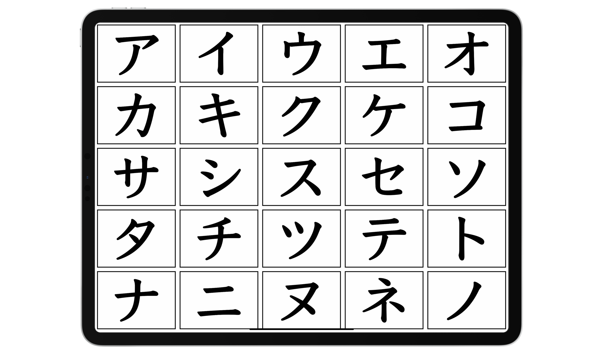

Japanese Guide¶
1.1 Why many people "fail" to learn Japanese¶
Many people have a simple goal in mind when learning Japanese: to be able to enjoy Japanese content without subtitles/translation and to speak Japanese fluently. Many people also fail to reach this goal though, even after years of study; it is not always their fault though, but rather the method's. In language learning, the method behind your learning makes a huge difference in the progress you make.
As it turns out, reaching that goal is not possible with "traditional" methods people usually use to study Japanese. There is a crucial ingredient missing in many people's learning routine that can lead them to failure. And that is immersion. Which is listening to or reading native content made for native speakers. For example, anime is originally in Japanese without subtitles, so when consumed in this form it is immersion.
1.2 Problems with traditional methods¶
"Traditional" methods tend to go like this:
- you learn the alphabet(s)
- you learn basic phrases such as greetings and how to introduce yourself
- you learn basic grammar structure and vocabulary
- you are tasked to create your own sentences either by having conversations with your tutor or study partner, or by writing.
- you are tasked to translate example sentences between your native language to your target language, and vice versa.
- you may read further explanations of grammar structures and vocabulary with a textbook or it's shown to you in a YouTube video or by a tutor.
- you continue to learn more vocabulary and grammar structures, which becomes your measure of your own ability.
- the endgame being moving to the country where the language is spoken in hopes of having many opportunities to practice your skills.
None of this is inherently bad at all, it is actually quite sufficient study, but it's simply not enough to get you to a high level. The problem is they aren't actually engaging with the real language— what do I mean by that?
Let's take swimming as an example. You can't stay in the baby pool with floaters all the time and wait until you become the master of the baby pool until you even attempt anything above that level if you want to be a good swimmer. How about an example more people would relate to: competitive video games. You can't expect to get good at the game by playing against bots and staying in training mode all day. You need to play the real game against other people even if you are going to get destroyed. That's how you learn.
It's important to learn how to move on!
A common trap people fall into in language learning is staying on beginner resources for too long; they want to ensure they know every single detail of their beginner resources and refuse to move onto the real language; refuse to engage in anything they aren't already comfortable with, because they are too afraid of not understanding anything; they feel like they "aren't ready". It is important to leave your beginner resource as soon as possible because the truth is... you will never be ready until you actually start engaging with the real language and getting yourself used to it.
1.3 The scale of language¶
Language... is a huge thing. There is so much to it that far exceeds the limitations of a classroom or app-based approach that aims to teach you about the language in a "x means y" or "x does y" format. Learning a language to a high level requires an enormous amount of experience hearing and reading what native speakers say.
It is often difficult to explain why they phrased sentences in a certain way, or why they used a certain word instead of another... which poses a problem for us learners as we can't just study grammar and vocab to achieve the same thing.
Attempting to construct sentences in said target language without the required experience often leads to unnatural, or easily misunderstood phrasing. Lack of experience with how native speakers use their language will make it difficult to understand them, due to unfamiliarity with sentences outside of what is taught by a specific learning resource.
This is why in your learning routine, you must do what we call “immersion” – reading and listening to what native speakers write and speak.
You may not realise how big of a thing language actually is. Even you being able to fluently read this guide without trouble is a testament to the scale of language, in particular the scale of language learning.
Language learning is a process of subconsciously memorising patterns through comprehensible input. What this means is, when you understand something (=comprehensible) in your immersion (=input), your brain stores that pattern subconsciously to be accessed later. You see, being able to fluently read this guide is because you have had so much experience reading English in the past that, when you read this, your brain is going, "Oh, there's pattern #234 used with pattern #82 and pattern #10!"
And because you are a proficient reader in English, you can do this effortlessly. You have seen the same patterns elsewhere. You can detect the tone and level of formality in my writing all thanks to your brain also storing the context, and other information of the patterns you come across.
Notice how I haven't mentioned "knowing the grammar" or "having memorised the vocabulary"? This is because naturally you don't process language in this way. Some of you may not even be native speakers and you've probably learned English grammar before, but it is unlikely you are actively thinking about it when coming into contact with English every day.
1.5 Coming to terms with sucking¶
In language learning, and in anything skill-based, you are always going to start off sucking for a long time until you get good. The reason I say this is, many learners (I am guilty of this too.) fall into the trap of making sure they are really good at something before ever trying to do the thing they need to work on. For example, someone might fuss over a certain stage of grammar for way too long and never find the time to move onto something else they want to work on.
☝ THIS HERE, ladies and gentlemen is what we want to avoid. We have to learn to move on from things and start working on the things we need to work on.
Yes, you won't understand that book or that anime perfectly the first time; but that is never how learning worked. It always takes a third, forth, fifth and even sixth pass to finally learn something.
1.6 How you will be studying with this method¶
The methodology covered in this guide consists of an immersion-based approach combined with study.
Your long-term study consists of:
- learning vocabulary
- learning grammar structures
- looking up vocabulary and grammar found in immersion
- using flashcards to better memorise vocabulary
As you can see, study pretty much boils down to learning the vocabulary and grammar. This is a crucial step in the learning process. We can't have immersion without study, but we also cannot have study without immersion because we want to be able to get meaning from our immersion and be able to see how what we've studied is used in real language.
Immersion usually consists of whatever a native speaker of that language would read or watch. For example a Japanese YouTube video, or an anime, or a book, or a forum post, or even social media, etc.
1.7 Stages of learning¶
Language learning is a long-term endeavour. It should be noted that your experience as a beginner getting into the language will differ greatly from an intermediate or advanced learner. The process does not change between intermediate and advanced learners since they have already gotten past the initial hurdle. This guide will steer you through the labyrinthine beginner stage, and then from the intermediate stage and onward.
2.1 How to learn Japanese¶
The learning process for the initial beginner stage consists of:
- learning the hiragana and katakana, which are two of the writing systems of Japanese. They are kind of like alphabets. You will grind this out on a website after watching a YouTube video on them.
- learning basic vocabulary with their kanji with a program called Anki
- learning grammar with a YouTube playlist
- starting to do mainly listening immersion with easy content and with high repetition
2.2 Hiragana and Katakana¶
Hiragana and katakana, these two are parts of the Japanese writing system. The 3rd part of it being kanji.
Japanese's writing system can be described as more of a "syllabary" than an alphabet. It is technically wrong to call these alphabets, as each character represents a syllable rather than a vowel or consonant. Take for example, "か", this reads as "ka".
Hiragana and katakana are collectively referred to as the "kana".
Hiragana¶

Hiragana can be described as the "main alphabet" of Japanese. It's used in grammatical things, parts of words with Japanese origin, for words that aren't usually written in kanji, and sometimes names. It's the curly and cute variant of kana.
Katakana¶
 Katakana is the angular and pointy version of kana. It has the exact same sounds as hiragana. It's used in loan words (words borrowed from other languages like English), onomatopoeia words (Japanese is full of these!) and slang words. It may also be used in names, mainly foreign names.
How you are going to learn the Kana¶
Step 1 - the chart¶
First I want you to take a good look at this kana chart
 View in browser
View in browser
Download image
{kind=link}
This chart will come in really handy when you are learning to read the kana. I recommend you save it.
Step 2 - the YouTube video¶
Watch this YouTube video
It's a 2 hour long video about hiragana and katakana. It is a great introduction into the kana.
Step 3 - the grinding¶
The kana grinding game
How to play
- Click "show/hide options"
- Click "check all" for Hiragana
- Start guessing how the hiragana are pronounced
- Repeat until confident (may take a few days or weeks), and then do the same thing but with all "Hiragana combinations" also checked.
- Repeat until confident, then do it with all "Katakana" also checked, and then with all "Katakana combinations" also checked.
Step 4 - reading practice¶
What also helps immensely in memorising the kana is reading sentences in kana.
Not everything in Japanese is written in kana, and you will have trouble trying to read most things at this point without kanji knowledge, but sometimes in Japanese, kana is put over kanji to help you read. This is known as furigana. An example can be seen here!
日本語
. This just means the Japanese language (nihongo). I wrote it in its kanji form and put hiragana over it.
I recommend practicing your kana by trying to read some Tadoku graded readers, which you can find here
You do not need to be able to understand anything.
This is for consolidating your kana knowledge.